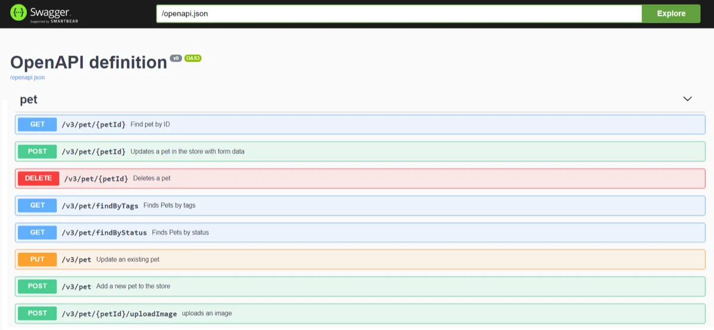

| You are reading the archived documentation for springdoc-openapi v1 (Spring Boot 1.x and 2.x), which is no longer maintained. See the current springdoc-openapi documentation for supported releases. |
Springdoc-openapi Demos
| The v1 demos are no longer hosted. The sources below still build and run locally, and the current demos are live. |
springdoc applications demos
